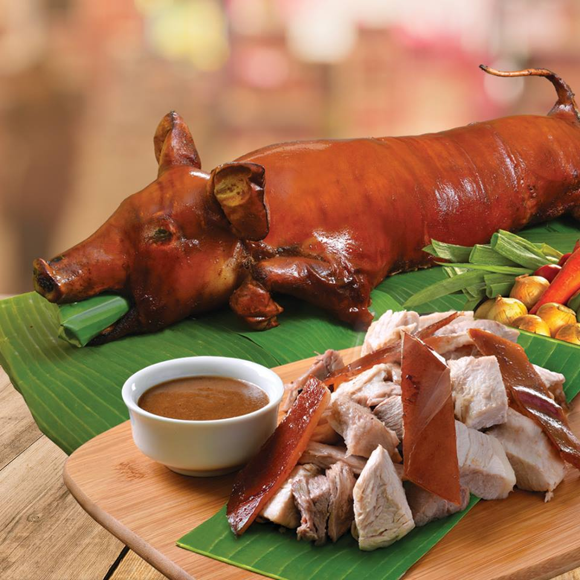

Lechon
The lechon is the most invited party guest in the Philippines. The entire pig is spit-roasted over coals, with the crisp, golden-brown skin served with liver sauce, the most coveted part. In Cebu, the stomach of the pig is stuffed with star anise, pepper, spring onions, laurel leaves and lemongrass resulting in an extremely tasty lechon, which needs no sauce. In Manila, folks can get their piggy from Elar's Lechon, while in Cebu, the best is CnT Lechon.
Watch the video below to learn how to cook Lechon!!!
<